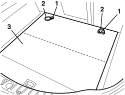
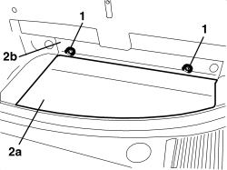

7040B10 LOAD PLATFORM (LUGGAGE PLATFORM) TRIM - R+R
- Path
- Procedures > 70 FITTINGS > 7040 BODY INTERIOR FITTINGS AND TRIM > 7040B LUGGAGE COMPARTMENT AND LOAD PLATFORM TRIMS > 7040B10 LOAD PLATFORM (LUGGAGE PLATFORM) TRIM - R+R
- Kind
- repair procedure (removal / refitting; the operation number is the code)
- Applies to
- all engines; all production periods
- Interactive page
- https://sloeber94.github.io/elrnDB-aBrrSpdr/en/#/946002620
Applies to: all engines; all production periods
 Removing
Removing
 Refitting
Refitting- Open the tailgate.
- Remove the rear parcel shelf.
1. Undo the bolts.
2. Keep the attachment rings.
3. Remove the load carrying compartment trim.

Applies to: all engines; all production periods
Refitting
Removing- Check that the load carrying compartment trim is not damaged.
- Position the attachment rings.
- Tighten the bolts.
- Refit the rear parcel shelf.
- Close the tailgate.
Applies to: engines: 2.2 JTS, 3.2 JTS; all production periods; only with equipment: Spider
Removing
Refitting- Open the boot lid.
1. Undo the bolts and remove the anchorage rings.
2. Remove load compartment lining (2a) by releasing it from back lining (2b).

Applies to: engines: 2.2 JTS, 3.2 JTS; all production periods; only with equipment: Spider
Refitting
Removing- Check that the load compartment lining is not damaged.
- Position the load compartment lining by attaching it under the back lining.
- Position the anchorage rings and tighten the bolts.
- Close the boot lid.
Topics that link to this page (7)
- 5010C60 LH OR RH REAR AIR OUTLET VENT (ONE) - R.R
- 5570T27 AERIAL SUPPORT - R.R
- 5570T85 CD/AUDIO PLAYER/LOADER - R.R.
- 5580T42 BOSE SOUND SYSTEM AMPLIFIER - R.R.
- 7025B34 BOOT LID EMERGENCY OPENING CONTROL - R.R.
- 7040B18 LOAD COMPARTMENT LOAD PLATFORM SIDE TRIM ONE LH OR RH - R.R
- 7095E35 REAR WING SOUND INSULATION PANEL (ONE), LEFT OR RIGHT - R.R.